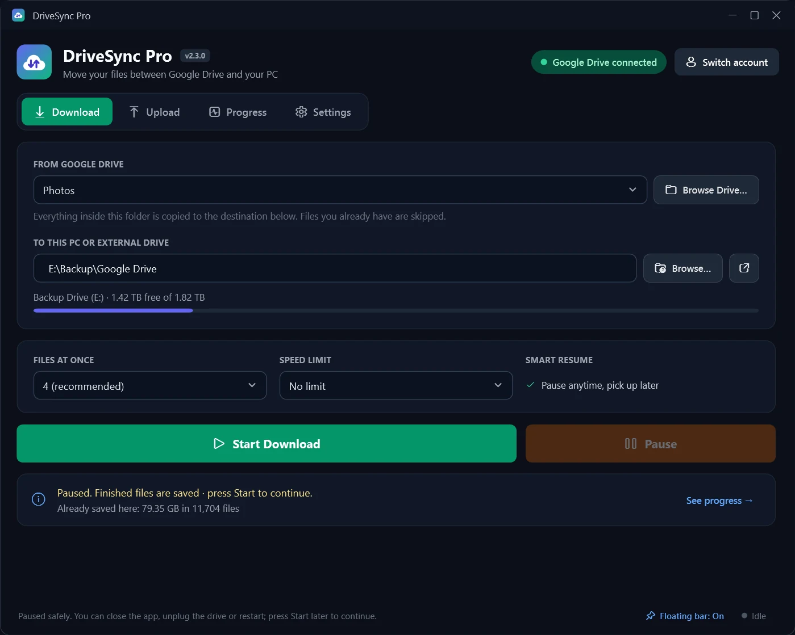

Your whole Google Drive, on your own hard drive.
DriveSync Pro copies any Google Drive folder, or your entire Drive, to your PC or an external disk. It uploads folders back too. Press Start, walk away, and pause anytime: it picks up where it left off.
- One-click install, no admin rights
- Skips files you already have
- Your files never touch our servers


See it in action
From Google Drive to your disk in three clicks
Pick a folder, press Start, and watch every file arrive.
Features
Made for big moves you don't want to babysit
A whole Drive can be hundreds of gigabytes. DriveSync Pro is built to run for hours, survive interruptions and tell you exactly what's happening.
Download a folder, or everything
Choose any folder in your Drive with the built-in folder browser, or take the whole thing. Save it to your PC, a USB disk or a big external drive.
- Shows free space on the destination drive before you start
- Keeps your folder structure exactly as it is on Drive
- Copies 2 to 16 files at once, with an optional speed limit

Pause anytime. It picks up where it left off.
Close the app, unplug the drive or restart your PC. Next time you press Start, files you already have are skipped and the copy carries on.
- Finished files are always kept
- Live speed, files done and time left, also on the taskbar icon
- Clear messages when a drive is missing or something goes wrong

Keep an eye on it from any app
While a transfer runs and you're working in something else, a small progress bar floats on top of your other windows. It disappears when DriveSync Pro is in front.
- Pause, resume or open the app right from the bar
- Drag it anywhere; it remembers where you put it
- Switch it on or off with one click
Upload folders to Drive
Send a folder from your PC or external drive to Google Drive. Every file is checked after upload.
Google Docs become Office files
Docs, Sheets and Slides download as .docx, .xlsx and .pptx, so they open anywhere.
Private by design
Runs entirely on your PC. Your files and sign-in go only between your computer and Google.
Speed you control
Go full speed overnight, or set a limit so your internet stays usable during the day.
Works with external drives
Shows when your disk is connected and how much space is left, and warns you before it fills up.
Never deletes anything
DriveSync Pro only copies. It doesn't remove files from your Drive or your PC.
How it works
Set up in about a minute
Install
Download DriveSyncPro-Setup.exe, open it and click Install. It adds Start menu and Desktop shortcuts.
Connect Google Drive
Click Connect Google Drive and sign in with Google in your browser. You only do this once.
Pick a folder and press Start
Choose what to copy and where it goes. Watch progress live, or let it run and check the floating bar.
Install help
Two warnings you might see, and why they're safe
DriveSync Pro is a small independent app, so Windows and Google don't recognise it yet. Here's what to click.
"Windows protected your PC"
Windows shows this for new apps without a paid publisher certificate. Click More info, then Run anyway.
"Google hasn't verified this app"
This appears when you connect your Drive, because the app hasn't been through Google's paid review. Click Advanced, then Go to DriveSync Pro, then Allow.
- Works on
- Windows 10 or 11 (64-bit)
- Needs
- A Google account and an internet connection
- Space
- About 85 MB for the app, plus room for your files
- Admin rights
- Not needed

FAQ
Questions people ask
Is DriveSync Pro free?
Yes. There's no account, subscription or trial. You only need your own Google account.
Will it delete anything from my Google Drive?
No. Downloads copy files from Drive to your PC, and uploads copy files from your PC to Drive. Nothing is ever removed on either side.
What happens if my PC restarts or I unplug the drive halfway?
Everything that finished copying is kept. Press Start again and DriveSync Pro skips those files and continues. A file that was only partly copied starts again from the beginning.
Can I copy my entire Google Drive?
Yes. Choose "Entire Google Drive" as the source. The app shows how much space is free on your destination drive so you can check it fits first.
What happens to Google Docs, Sheets and Slides?
They're saved as Word, Excel and PowerPoint files (.docx, .xlsx, .pptx). You can turn this off in Settings to skip them instead.
Is it safe to sign in with Google?
Yes. You sign in on Google's own page, and the sign-in is stored only on your PC. DriveSync Pro has no server, so nobody else sees your files. You can remove its access anytime at myaccount.google.com/permissions.
Does it work on Mac or Linux?
Not yet. DriveSync Pro is for Windows 10 and 11.
How do I uninstall it?
Open Windows Settings, go to Apps, find DriveSync Pro and click Uninstall. Files you downloaded or uploaded are never touched.
Bring your Drive home
Free for Windows 10 and 11. One file, one click to install.
Download DriveSync Pro